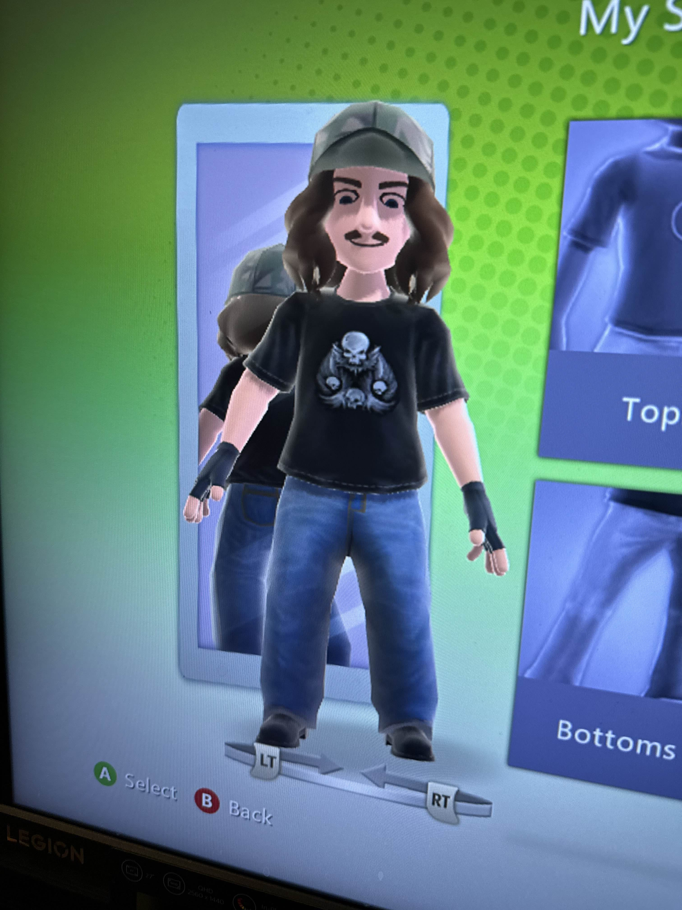
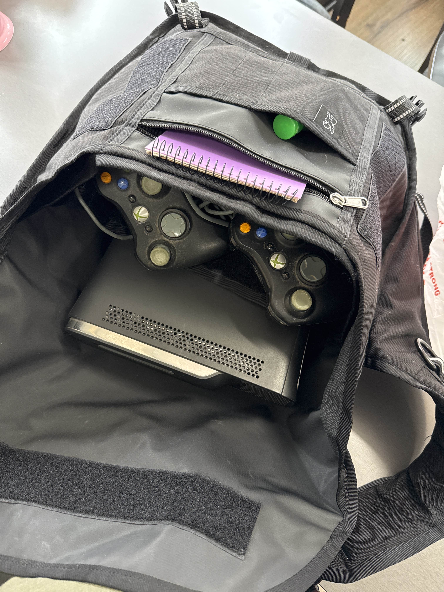
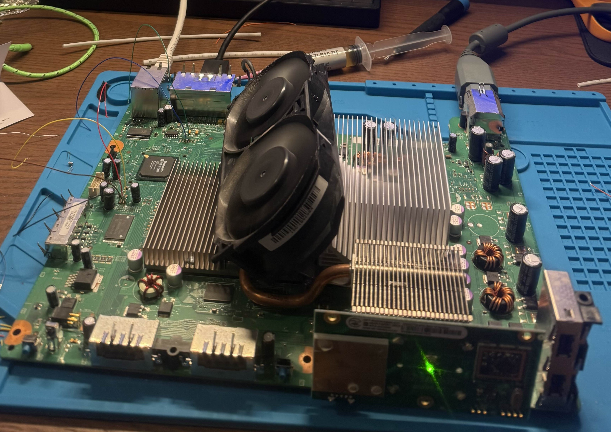
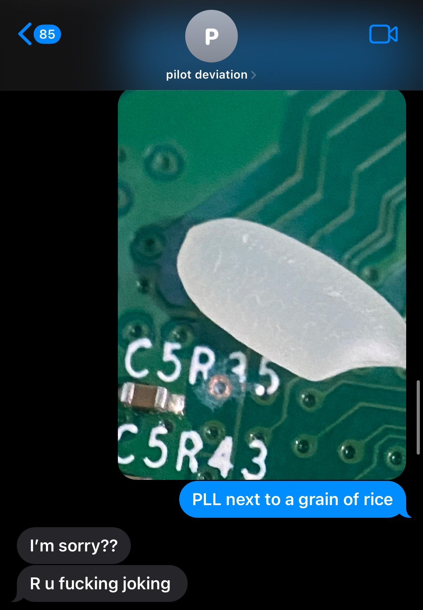
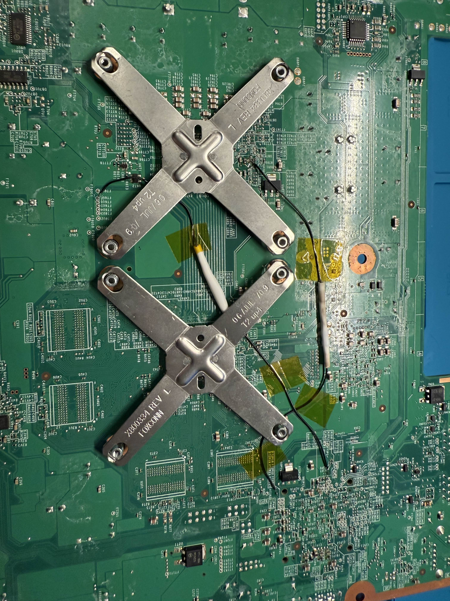

september 2025
the xbox 360 is probably the piece of consumer plastic that matters to me the most. i grew up inside that thing. by the time i was old enough to have memories the 360 was already the console, already the center of everything. i learned about people, about love, about zeal, about cliques, about what it meant to belong all through that dashboard. cod trickshotting was the first thing i ever devoted myself to. it wasn't that different from hardcore now that i think about it. everyone had their own gateway in, their own style, their own way of moving. interpersonal politics, hierarchies, gatekeeping, same weird ettiquette, same silent pressure to perform and same split between the people doing it because it felt good and the ones doing it because they wanted a name. looking back now it prepared me for everything else id ever obsess over.

the second i saw trickshotting i felt it in a way i hadn't felt before. not excitement, not envy, not even ambition exactly. there was a shine to it, an almost naive (iykyk) allure. it was all about the shot, none were identical yet all were cohesive. and when that killcam played everything else could fall away.. the bullshit, the arguments, the scene drama. and i knew i had to start. then you spend enough time there. you start seeing the seams. the setup clips, the azza lobbies (modded lobbies used to fake clips), the rigged recruitment challenges. the people who care more about applause than the art of it. the shine peels back, revealing all the fucked up mechanisms and compromise behind it. yet you stay. you stay because you love it. you stay because you've already absorbed part of it into yourself. it isn't about purity anymore, it's about fidelity. fidelity to the part of you that was first drawn in by it, the part that wanted to belong, to learn, to devote yourself alongside other people who cared enough to do the work. hardcore felt the same way when i came to it in my early adulthood. not the adrenaline, not the volume, not the fear (even though they were there) but the ethics. the tiny almost invisible rules that govern how people move, how they protect each other, how they weigh their energy against others. who will push through for you without a second thought, and who will try and knock you out because they wanna show off in a dossy video. who respects you and your love for hardcore, and whose presence drags everyone else down. it all carries a moral calculus. you dont even notice it at first. but eventually the social physics reveal themselves. and if you pay attention, if you care, it leaves a mark. it becomes a way of understanding yourself.. what you tolerate, what you defend, what you let slide, and how you carry responsibility for others even in moments that feel selfish or ecstatic. i think thats why trickshotting and hardcore always collided in my head. because both are about fidelity to a system, to a craft, to a circle of people who are unflinching in their expectations. the shine of the surface is a lie, and the work underneath is everything. you love it not because its perfect, not because it's pure, not because it's easy, but because it demands you, and because you've already let it take something from you. you keep going because it shapes you, it leaves a trace in your instincts, your ethics, your sense of what matters.. long after the veneer has worn off.

that's the frame i bring when i sit at my desk with an xbox 360 motherboard, soldering iron in my hand, staring at the smallest pad of copper i've ever laid my eyes on. the obsession, the small details, the care for invisible consequences, the respect for what you can't see. it's all the same shit and i fucking love it. anyway, i grabbed the console off gumtree. it was listed cheap enough that i assumed it was gonna be beat as fuck, but when i met the guy outside this vietnamese deli near his house it turned out to be so well kept. we ended up talking halo 3 for a good thirty minutes like we were back at a midnight launch line. no real awkwardness, just two bros hating on the covenant and talkin deep cuts about betrayals on narrows. he didn’t even want cash in the end.. i just went inside, bought him a tuna roll with coriander and extra chili, had lunch with him, and walked off with a console in my chrome bag. one of the better trades i’ve made if I don't say so myself.

first mistake was going to jaycar. i walked in needing a 1N4148 diode, a 22k ohm resistor and some 30awg wire, and the guy tried to sell me something closer to a power line. asked about no-clean flux, he pointed at a crusty tube that looked like soviet war bunker toothpaste. 0.3mm diameter solder? forget it. he could sell you a chainsaw and a pool filter on the same aisle, but wire smaller than garden hose is impossible to source. would prob have better luck shopping for an rgh on the moon. after a nightmare online shopping spree and a pleasant trip to altronics (bar the employee hinting that i would royally fuck up the install) everything required was on the way. when i finally had what i needed, i cracked the case. clips that weren't meant to be pryed, security torx screws, smug warranty sticker. inside was better than expected, though the thermal paste had the consistency of the floor at lion arts. after a solid hour of the arcticlean one two punch the cpu and gpu dies were factory shiny, re-pasted with mx-4. the x-clamps had come off easy enough with the x-clamp tool, but putting the bastards back on was a different story.. holding up the board by the giant heatsinks while using two hands to force each corner of the clamp back in place was less than ideal. i just about took out a whole cluster of traces near the post1 side of the board. ended up getting them back on with the help of a 160p fifteen year old youtube tutorial.

after one more go on my smd solder practice kit straight outta shenzhen i knew i was ready as id ever be. set the pinecil to 350 celcius, drowned the points in flux and went straight for it with the picoflasher wires. six out of seven joints looked functional and shiny, one point was less than ideal so i reflowed it a few times til it looked the part. power cable in, pico plugged into my pc, octal's jrunner with extras open and everything looked good ! successful nand dump, no bad blocks. flashed xell and realised it's time for the hard part. pll.. this fucking point.. for weeks leading up id had nightmares about pll, the things i have read, the size of the bastard.. seeing it with my own two eyes did nothing but make me rethink trying this in the first place. its microscopic man, not 'small' like an smd resistor. but small in the way that my iron looked like a fuckin jackhammer next to the pad. one wrong movement and im lifting it straight off the board. i had to psych myself up for a good five mins before i was ready to attempt it. i tinned my iron and went in, faked myself out three or so times repositioning my hand for more stability.. felt like i was lining up a putt on the pga tour. eventually i found that resting my hand on the x-clamp helped significantly and had no choice but to go for it. you spend all this time leading up to the big moment only for it to be over in about three seconds. heated the pad, fed the wire in swiftly, lifted the iron. done. clean joint. no words can explain how fucking fired up i got after nailing pll, i just carried the momentum and flew through the rest. smc_pll done. kapton tape goes down, holding the wire in a nice short routing. set up the post1 wire, attached the diode and went for it. post1 needed a quick reflow cause i had a bit too much exposed wire leaning towards the row next to it and i wasn't gonna risk that shorting in the future. no big deal, smc_post1 went off without a hitch. the rgh wiring was done.. i don't own a multimeter so i couldn't check if it was actually gonna work or not.. part of me was still shitting it with anticipation. power cable goes in, rf board goes back on. booted into xell like a dream. cpu key obtained. resoldered in the picoflasher, cracked open jrunner to prepare the cfw. console not found! console not found! console not found! console not found! console not found! console not found! FUCKKKKKKKKKKKK. i figured it was just my soldering, rechecked everything and it looked fine.. resoldered it all anyway. this happened THREE times total before i dropped something and when i looked down noticed a fuckin giant grey power cable taunting me on my carpet. i forgot to plug the console in.. no relief (tui reference), just embarrassment. everything worked like a charm. flashed the cfw image to the nand. i now have an rgh. instant and reliable boots. had to rebuild the console, that shit is NOT as easy as everyone loves to make it sound. every guide says 'oh well ! if you've gotten this far you'll have noooo trouble putting it back together' what a fucking blatant lie. i was relying on more fifteen year old guides edited in camtasia studio to get it back in the shell. i managed to strip one of the long torx screws that go thru the entire console, heard the plastic snap when i turned my wrist and knew id fucked it. oh well. console works perfectly. now im booted into freestyle dash and the only thing left to do is play some xbox.

" style="height:350px;">
i've been thinking a lot about why i even did this. not because i regret it, i don't. but because it feels like the kind of project that only makes sense if you've been in it from the start. nobody in 2025 needs an rgh 360. nobody needs to stay up late flashing nand images and reflowing wires the width of eyelashes. but i do. i need it in the same way i needed to learn how to time nac swaps in mw2 as a kid, or how to get over my social anxiety and approach people at hardcore shows. it's the same instinct. different machines, different stakes, but the same drive. and when it finally booted, when xell spat out that cpu key, it was just like hitting my first shot all over again. just me and the console, the moment before the curtain falls (overcome reference). i guess that's all this post really is, just me letting you in on the fact that the 360 stills holds value. a tuna roll, fuck loads of flux, and a few weeks of anxiety, the whole process. it's all just a way of keeping that part of me alive. the part that first fell in love with obsession, with fidelity, with the shine and the underbelly of a thing that takes everything from you. it runs through me like 30awg wire, and now it runs through the console too. and thats enough for me.
if anyone wants an rgh let me kno ill happily do it for sweatshop wages if we are friends.
← back to blog index